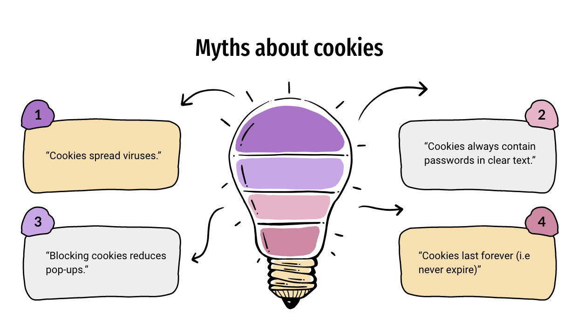

Myths about HTTP Cookies
Last Updated: November 5, 2020
Whenever you visit a website or login to a website, your preferences are often saved. Most of the time, you are so used to it, you don't even notice these small settings tailored towards you. This is accomplished by cookies . Despite generally serving for the user's benefit, cookies sometimes have a bad reputation.
In this week's blog, I have decided to search for some popular myths about cookies and look for facts to debunk those myths.
Myth 1: "Cookies spread viruses."
We can already say that this statement is false by just looking at the definition of cookies, which tells us that they are text files. Therefore, they cannot contain any machine language in them, which means they cannot create executable programs.
Myth 2: "Cookies always contain passwords in clear text."
Even though a cookie is unencrypted on the user's computer, it can be encrypted between the user's computer and a website. According to Jonathan Steam, programmers can require that cookies be delivered and received only in the context of a Secure Sockets Layer (SSL) session. During this SSL session encryption of cookie data happens.
In addition, some people think that cookies are linked to individuals. While cookies can identify a user using a specific browser, it does not contain any personal identifying information that is attached to this user. Moreover, if the user were to close one browser and open another, there is no 100% gurantee that these sesssions are linked to the same person.
Myth 3: "Blocking cookies reduces pop-ups."
Actually, blocking cookies could usually cause the opposite effect. The reason why that would happen is that pop-up advertisements often use cookies to track whether a user has already seen a certain ad or not. Therefore, if a user blocks cookies, a website will not know whether that user has already seen the pop-up ad, and will keep showing the user that same pop-up ad. Usually if a user has already closed a pop-up window, a cookie will store that information and help make sure the yser doesn't see the same ad for a while. I would recommend installing an adblocker, if you hate pop-up ads.
Myth 4: "Cookies last forever/never expire."
According to Jonathan Steam, depending on the browser's settings and the type of cookies, the browser may accept or not accept the cookie and may save the cookie for either a short time or a long time. Cookies that have an expiration date are generally known as 'persistent cookies'. On the other hand, a 'session cookie' that does not contain an expiration date will only last as long as your browser stays open. When you close your browser, all session cookies discretely disappear.
In conclusion, despite the beliefs that cookies are malicious, they generally serve a good purpose for both the web developers and the users. In the next week's blog, I would like to explore some of the fundamental vulnerabilities associated with cookies and how hackers exploit them.
Sources:
- Jonathan Steam. The 10 common myths of cookies. https://doi.org/10.1016/S1361-3723(98)80006-7
- https://blog.webf.zone/ultimate-guide-to-http-cookies-2aa3e083dbae
- https://midlothianweb.com/web-cookie-myths-exposed/
- https://us.norton.com/internetsecurity-wifi-what-is-a-man-in-the-middle-attack.html
- https://doubleoctopus.com/security-wiki/threats-and-tools/session-hijacking/